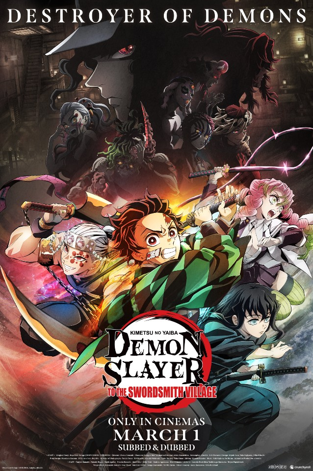
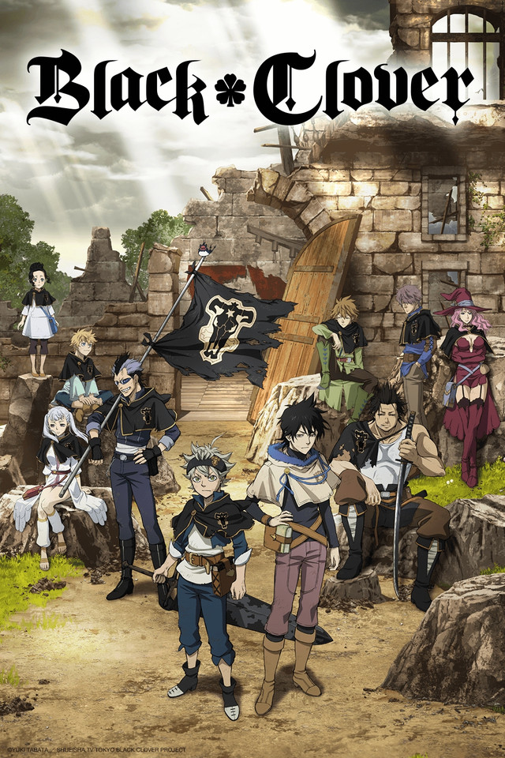

TOP1

Vinland Saga (Japanese: ヴィンランド・サガ, Hepburn: Vinrando Saga) is a Japanese anime television series based on Makoto Yukimura's manga of the same name. The first season was produced by Wit Studio in 2019 and the second one by MAPPA in 2023. They follow the life of a child named Thorfinn who becomes involved with Vikings following his father's death. The first season follows his exploits as a revenge-driven Viking, while in the second season, the story shifts to his life as a stoic slave who finds no reason to live.
TOP2

Demon Slayer: Kimetsu no Yaiba (鬼滅の刃, Kimetsu no Yaiba, rgh. "Blade of Demon Destruction")[4] is a Japanese manga series written and illustrated by Koyoharu Gotouge. It was serialized in Shueisha's shōnen manga magazine Weekly Shōnen Jump from February 2016 to May 2020, with its chapters collected in 23 tankōbon volumes. It has been published in English by Viz Media and simultaneously on the Manga Plus platform by Shueisha. It follows teenage Tanjiro Kamado, who strives to become a Demon Slayer after his family was slaughtered and his younger sister, Nezuko, is turned into a demon.
TOP3

Bleach: Thousand-Year Blood War (BLEACH 千年血戦篇, Burīchi: Sennen Kessen-hen), also known as Bleach: The Blood Warfare, is a Japanese anime television series based on the Bleach manga series by Tite Kubo and a direct sequel to the Bleach anime series. In March 2020, Weekly Shōnen Jump and "Bleach 20th Anniversary Project & Tite Kubo New Project Presentation" livestream announced that the manga's final story arc, the "Thousand-Year Blood War", would receive an anime project.[1] In November 2020, it was confirmed that the anime project would be a television series adapting the entirety of the arc. The trailer and visual for the series were revealed at the Jump Festa '22 in December 2021.
TOP4
The Pet Girl of Sakurasou (Japanese: さくら荘のペットな彼女, Hepburn: Sakura-sō no Petto na Kanojo, lit. "The Pet Girl of Sakura Dormitory") is a Japanese light novel series written by Hajime Kamoshida, with illustrations by Kēji Mizoguchi. ASCII Media Works published 13 volumes between January 2010 and March 2014. A manga adaptation illustrated by Hōki Kusano was serialized ASCII Media Works' Dengeki G's Magazine and Dengeki G's Comic.
TOP5
The Irregular at Magic High School (Japanese: 魔法科高校の劣等生, Hepburn: Mahōka Kōkō no Rettōsei, lit. "The Poor Performing Student of a Magic High School") is a Japanese web novel series by Tsutomu Satō. It was published on Shōsetsuka ni Narō, a web novel website, from October 2008 to March 2011. Satō reached a deal with Dengeki Bunko and began releasing his work in a light novel format beginning July 2011. The story takes place in the 2090s where technology has allowed magic to exist, and follows Tatsuya and Miyuki Shiba, siblings who enroll into First High magic high school. While keeping their connections to the infamous Yotsuba clan secret, they attempt to live their daily life in peace, but Tatsuya is shunned for his apparent ineptness and Miyuki is validated for her magical abilities.
TOP6
That Time I Got Reincarnated as a Slime (Japanese: 転生したらスライムだった件, Hepburn: Tensei Shitara Suraimu Datta Ken), also known as Regarding Reincarnated to Slime[b] and by the contraction TenSura (転スラ), is a Japanese fantasy light novel series written by Fuse [ja], and illustrated by Mitz Vah.[5] The story follows Satoru Mikami, a salaryman who is murdered and then reincarnated in a sword and sorcery world as a titular slime, who goes on to gather allies to build his own nation of monsters.
TOP7

Black Clover (Japanese: ブラッククローバー, Hepburn: Burakku Kurōbā) is a Japanese manga series written and illustrated by Yūki Tabata. It started in Shueisha's shōnen manga magazine Weekly Shōnen Jump in February 2015. The series ran in the magazine until August 2023, and moved to Jump Giga in December of the same year. Its chapters have been collected in 36 tankōbon volumes as of February 2024. Set in a world where everyone is given the ability to use magic, the story follows Asta, a young boy born without any magic power who is given a rare grimoire that grants him anti-magic abilities. With his fellow mages from the Black Bulls, Asta plans to become the next Wizard King.
TOP8

Attack on Titan (Japanese: 進撃の巨人, Hepburn: Shingeki no Kyojin, lit. 'The Advancing Giant') is a Japanese manga series written and illustrated by Hajime Isayama. It is set in a world where humanity is forced to live in cities surrounded by three enormous walls that protect them from gigantic man-eating humanoids referred to as Titans; the story follows Eren Yeager, who vows to exterminate the Titans after they bring about the destruction of his hometown and the death of his mother. It was serialized in Kodansha's monthly magazine Bessatsu Shōnen Magazine from September 2009 to April 2021, with its chapters collected in 34 tankōbon volumes.
TOP9
Bungo Stray Dogs (Japanese: 文豪ストレイドッグス, Hepburn: Bungō Sutorei Doggusu, lit. "Literary Stray Dogs") is a Japanese manga series written by Kafka Asagiri and illustrated by Sango Harukawa, which has been serialized in Kadokawa Shoten's seinen manga magazine Young Ace since 2012. The series follows the members of the "Armed Detective Agency" as they try to protect Yokohama from the Port Mafia. The show mainly focuses on the weretiger Atsushi Nakajima, who joins others gifted with supernatural powers to accomplish different tasks including running a business, solving mysteries and carrying out missions assigned by the agency.
TOP10

Kaguya-sama: Love Is War (Japanese: かぐや様は告らせたい ～天才たちの恋愛頭脳戦～, Hepburn: Kaguya-sama wa Kokurasetai: Tensai-tachi no Ren'ai Zunōsen, lit. "Lady Kaguya Wants to Make Him Confess: The Geniuses' War of Hearts and Minds") is a Japanese romantic comedy manga series written and illustrated by Aka Akasaka. It was first serialized in Shueisha's seinen manga magazine Miracle Jump from May 2015 to January 2016, and later transferred to Weekly Young Jump, where it ran from March 2016 to November 2022. Its chapters were collected in 28 tankōbon volumes. In North America, the manga is licensed in English by Viz Media.